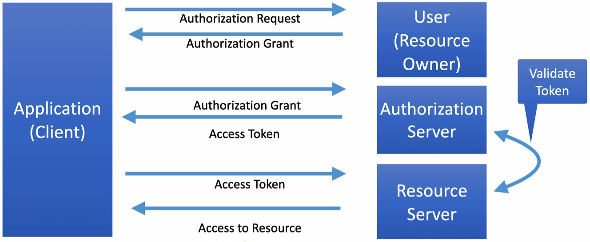

Spring Security Spring Authorization Server Spring Resource Server Maven Dependencies <dependency> <groupId>org.springframework.boot</groupId> <artifactId>spring-boot-starter-security</artifactId> </dependency> <dependency> <groupId>org.springframework.security</groupId> <artifactId>spring-security-test</artifactId> <scope>test</scope> </dependency> Just by adding the dependency, Spring Boot will provide us sensible defaults. For example, it will autoconfigure Basic HTTP Authentication and secure all REST API endpoints. Basic HTTP Auth should be used with HTTPS, because username and password are sent over the internet as base64 encoded and without HTTPS they can be easily decoded. It is discouraged to use Basic HTTP Auth in an Enterprise project. Basic HTTP Auth Calling REST API endpoint with Basic HTTP Auth If you’ll just send a GET request to http://localhost:8080/api/v1/resource, you’ll get Response Status Code: 401 Unauthorized. Basic HTTP Auth requires a header in the request called Authorization with value: Basic dXNlcjphM2JhNmYyOS0xMGU0LTQ5OTctOTg4Mi0yMjM0ODg4M2Q5NTQ= where after Basic there is base64 encoded username and password. Decoding base64 string $ echo "dXNlcjphM2JhNmYyOS0xMGU0LTQ5OTctOTg4Mi0yMjM0ODg4M2Q5NTQ=" | base64 --decode user:a3ba6f29-10e4-4997-9882-22348883d954 Encoding base64 string $ echo -n "user:a3ba6f29-10e4-4997-9882-22348883d954" | base64 dXNlcjphM2JhNmYyOS0xMGU0LTQ5OTctOTg4Mi0yMjM0ODg4M2Q5NTQ= Customizing username and password By default, Spring will create a new password on each deployment. You can customize Spring Security username and password with these properties: spring.security.user.name=my-user spring.security.user.password=my-password Using 🟢 RestTemplate with Basic HTTP Auth You’ll have to invoke 🟢 RestTemplateBuilder#basicAuthentication(String username, String password) when configuring Bean here. Testing HTTP GET with Basic HTTP Auth An example how Basic HTTP Auth can be added to the test: mockMvc.perform(get("/api/v1/resource") .with(httpBasic("my-user", "my-password")) (1) .accept(MediaType.APPLICATION_JSON)) .andExpect(status().isOk()) .andExpect(content().contentType(MediaType.APPLICATION_JSON)) .andExpect(jsonPath("$.content.length()", is(3))); 1 This way we can add Authorization header to the request Testing HTTP POST with Basic HTTP Auth For HTTP POST simply adding to the test: .with(httpBasic("my-user", "my-password")) is not enough. You’ll get Response Status Code: 403 Forbidden due to: Invalid CSRF token found for http://localhost/api/v1/resource. You can ignore CSRF token only for REST API by creating a 🟢 SecurityConfig: @Configuration public class SecurityConfig { @Bean public SecurityFilterChain securityFilterChain(HttpSecurity httpSecurity) throws Exception { httpSecurity.authorizeHttpRequests(authorize -> authorize.anyRequest().authenticated()) (1) .httpBasic(Customizer.withDefaults()) (2) .csrf(csrf -> csrf.ignoringRequestMatchers("/api/**")); (3) return httpSecurity.build(); } } 1 Require any request to be authenticated 2 Setup HTTP Basic Auth with the defaults 3 Do not require CSRF Token on /api/** urls If your test is annotated with @SpringBootTest, then you need to create 🔴 MockMvc like this: MockMvc mockMvc = MockMvcBuilders.webAppContextSetup(wac) .apply(springSecurity()) (1) .build(); 1 Configure 🔴 MockMvc to use Spring Security If your test is annotated with @WebMvcTest, then you need to import 🟢 SecurityConfig by annotating the test class with: @Import(SecurityConfig.class) OAuth 2.0 and JWT Overview OAuth 2.0 Authorization Framework used to grant limited access to resources without full access to the account. It allows you to grant access to a third party application to act on your behalf. OAuth Roles Client - the application requesting access Resource Owner - the user who wishes to grant an application (Client) access Authorization Server - verifies the identity of the user then issues access tokens to the application Resource Server - the resource to access Client Credentials Flow Most common OAuth Authorization Flow for RESTful APIs. It is used by services, where the user is a service role.  Figure 1. Client Credentials Flow with JWT JWT JSON Web Token. It contains user information and authorized roles (scopes). It has three parts: Header, Payload (data) and Signature. All 3 parts are tokenized using base64 encoding. HTTP / REST are stateless - each request is self-contained. Unlike Web Applications which often use session id’s stored in cookies. JWT is signed which prevents clients from altering the contents of the JWT. It can be signed using a number of techniques: Symmetric encryption - uses single key to sign, requires key to be shared Asymmetric encryption - uses Public and Private Keys (known as Key Pair) Private Key is used to generate signature and is not shared Public Key is shared and is used to verify signature JWT Verification The Authorization Server signs JWT using the Private Key The Resource Server requests the Public Key from the Authorization Server Using the Public Key the Resource Server verifies the signature of the JWT The Resource Server can cache the Public Key for verification of future requests Once the Resource Server has the Public Key, JWT can be validated without additional requests from the Authorization Server. OAuth vs Basic HTTP Auth Basic HTTP Auth requires user credentials to be shared with every resource Basic HTTP Auth sends user credentials unencrypted in HTTP header and can be compromised With OAuth user credentials are only shared with Authorization Server User credentials cannot be obtained from Authorization Token Basic HTTP Auth has no concept of security roles With OAuth 2.0 security roles are defined in scopes and passed in Authorization Token When we’re dealing with security roles, we can grant access to resources as needed or deny access when appropriate. Calling REST API endpoint with OAuth 2.0 You’ll need Maven Dependency: <dependency> <groupId>org.springframework.boot</groupId> <artifactId>spring-boot-starter-oauth2-client</artifactId> </dependency> and these properties: spring.security.oauth2.resourceserver.jwt.issuer-uri=http://localhost:9000 spring.security.oauth2.client.registration.springauth.client-id=oidc-client spring.security.oauth2.client.registration.springauth.client-secret=secret spring.security.oauth2.client.registration.springauth.scope[0]=message.read spring.security.oauth2.client.registration.springauth.scope[1]=message.write spring.security.oauth2.client.registration.springauth.authorization-grant-type=client_credentials spring.security.oauth2.client.registration.springauth.provider=springauth spring.security.oauth2.client.provider.springauth.authorization-uri=http://localhost:9000/oauth2/authorize spring.security.oauth2.client.provider.springauth.token-uri=http://localhost:9000/oauth2/token Next, you need to add @Bean for ⚪ OAuth2AuthorizedClientManager which will be responsible for the overall management of 🟢 OAuth2AuthorizedClient. The primary responsibilities include: Authorizing (or re-authorizing) an OAuth 2.0 Client by leveraging an ⚪ OAuth2AuthorizedClientProvider Delegating the persistence of an 🟢 OAuth2AuthorizedClient, typically using an ⚪ OAuth2AuthorizedClientService or ⚪ OAuth2AuthorizedClientRepository @Configuration public class RestTemplateBuilderConfig { // ... @Bean OAuth2AuthorizedClientManager authorizedClientManager(ClientRegistrationRepository clientRegistrationRepository, (1) OAuth2AuthorizedClientService authorizedClientService) { OAuth2AuthorizedClientProvider authorizedClientProvider = OAuth2AuthorizedClientProviderBuilder.builder() .clientCredentials() .build(); (2) AuthorizedClientServiceOAuth2AuthorizedClientManager authorizedClientServiceAuthorizedClientManager = new AuthorizedClientServiceOAuth2AuthorizedClientManager( clientRegistrationRepository, authorizedClientService); (3) authorizedClientServiceAuthorizedClientManager.setAuthorizedClientProvider(authorizedClientProvider); return authorizedClientServiceAuthorizedClientManager; } // ... } 1 ⚪ ClientRegistrationRepository checks if client registrationId provided in authorization request is present in registration repository (enriched from registration properties) 2 ⚪ OAuth2AuthorizedClientProvider is a strategy for authorizing (or re-authorizing) an OAuth 2.0 Client. Implementations will typically implement a specific authorization grant type. Here we build 🟢 ClientCredentialsOAuth2AuthorizedClientProvider which is an implementation for client_credentials grant. 3 🔴 AuthorizedClientServiceOAuth2AuthorizedClientManager is an implementation of ⚪ OAuth2AuthorizedClientManager which persist 🟢 OAuth2AuthorizedClient: By default, when an authorization attempt succeeds, the 🟢 OAuth2AuthorizedClient will be saved in the ⚪ OAuth2AuthorizedClientService. By default, when an authorization attempt fails due to an invalid_grant error, the previously saved 🟢 OAuth2AuthorizedClient will be removed from the ⚪ OAuth2AuthorizedClientService. You’ll also need to implement @Component for ⚪ ClientHttpRequestInterceptor which allows to modify the outgoing request and/or the incoming response: @Component public class OAuthClientInterceptor implements ClientHttpRequestInterceptor { private final OAuth2AuthorizedClientManager authorizedClientManager; private final ClientRegistration clientRegistration; private final Authentication principal; public OAuthClientInterceptor(OAuth2AuthorizedClientManager authorizedClientManager, ClientRegistrationRepository clientRegistrationRepository) { this.authorizedClientManager = authorizedClientManager; (1) this.clientRegistration = clientRegistrationRepository.findByRegistrationId("springauth"); (2) principal = createPrincipal(); } @Override public ClientHttpResponse intercept(HttpRequest request, byte[] body, ClientHttpRequestExecution execution) throws IOException { OAuth2AuthorizeRequest authorizeRequest = OAuth2AuthorizeRequest.withClientRegistrationId( clientRegistration.getRegistrationId()).principal(principal).build(); (3) OAuth2AuthorizedClient authorizedClient = authorizedClientManager.authorize(authorizeRequest); (4) if (isNull(authorizedClient)) { throw new IllegalStateException("Missing credentials"); } request.getHeaders().add(HttpHeaders.AUTHORIZATION, "Bearer " + authorizedClient.getAccessToken().getTokenValue()); (5) return execution.execute(request, body); (6) } private Authentication createPrincipal() { return new Authentication() { @Override public Collection<? extends GrantedAuthority> getAuthorities() { return List.of(); } @Override public Object getCredentials() { return null; } @Override public Object getDetails() { return null; } @Override public Object getPrincipal() { return this; } @Override public boolean isAuthenticated() { return true; } @Override public void setAuthenticated(boolean isAuthenticated) throws IllegalArgumentException { } @Override public String getName() { return clientRegistration.getClientId(); } }; } } 1 ⚪ OAuth2AuthorizedClientManager from previous step. 2 ⚪ ClientRegistrationRepository returns 🔴 ClientRegistration enriched with our springauth registration properties. 3 🔴 OAuth2AuthorizeRequest represents a request the ⚪ OAuth2AuthorizedClientManager uses to authorize (or re-authorize) the client identified by the provided client registrationId (springauth) and principal (oidc-client). 4 ⚪ OAuth2AuthorizedClientManager returns 🟢 OAuth2AuthorizedClient after successful authorization. 5 🟢 OAuth2AuthorizedClient contains JWT which we can include in the Authorization header of the original request. 6 Original request is executed. 🟢 OAuthClientInterceptor can be added to 🟢 RestTemplateBuilder: @Configuration public class RestTemplateBuilderConfig { @Value("${rest.template.baseUri}") String baseUri; // ... @Bean RestTemplateBuilder restTemplateBuilder(RestTemplateBuilderConfigurer configurer, OAuthClientInterceptor clientInterceptor) { assert StringUtils.hasText(baseUri); return configurer.configure(new RestTemplateBuilder()) .additionalInterceptors(clientInterceptor) (1) .uriTemplateHandler(new DefaultUriBuilderFactory(baseUri)); } } 1 🟢 OAuthClientInterceptor handles client authorization in Authorization Server and enrichment of Authorization header for each request Testing request with OAuth 2.0 If your test is annotated with @SpringBootTest, then you don’t need additional configuration. If your test is annotated with @RestClientTest, then you need to mock ⚪ OAuth2AuthorizedClientManager with @MockBean: @MockBean OAuth2AuthorizedClientManager authorizedClientManager; and add a @TestConfiguration @TestConfiguration public static class TestConfig { @Bean (1) ClientRegistrationRepository clientRegistrationRepository() { return new InMemoryClientRegistrationRepository(ClientRegistration.withRegistrationId("springauth") .authorizationGrantType(AuthorizationGrantType.CLIENT_CREDENTIALS) .clientId("test") .tokenUri("test") .build()); } @Bean (2) OAuthClientInterceptor clientInterceptor(OAuth2AuthorizedClientManager authorizedClientManager, ClientRegistrationRepository clientRegistrationRepository) { return new OAuthClientInterceptor(authorizedClientManager, clientRegistrationRepository); } } 1 Overrides default ⚪ ClientRegistrationRepository and creates the one for the test. 2 Overrides default 🟢 OAuthClientInterceptor to use mocked ⚪ OAuth2AuthorizedClientManager and customized ⚪ ClientRegistrationRepository Next, in @BeforeEach you can mock ⚪ OAuth2AuthorizedClientManager behavior in following way: @BeforeEach void setUp() throws JsonProcessingException { ClientRegistration clientRegistration = clientRegistrationRepository.findByRegistrationId("springauth"); OAuth2AccessToken token = new OAuth2AccessToken(OAuth2AccessToken.TokenType.BEARER, "test", Instant.MIN, Instant.MAX); (1) when(authorizedClientManager.authorize(any())).thenReturn(new OAuth2AuthorizedClient(clientRegistration, "test", token)); // ... } 1 This 🟢 OAuth2AccessToken will be returned together with 🟢 OAuth2AuthorizedClient after invoking OAuth2AuthorizedClientManager#authorize(OAuth2AuthorizeRequest authorizeRequest)